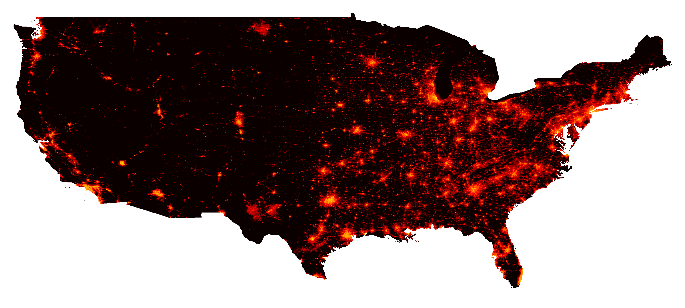
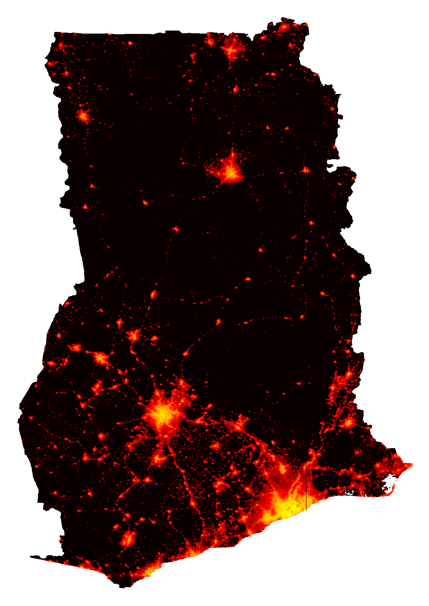
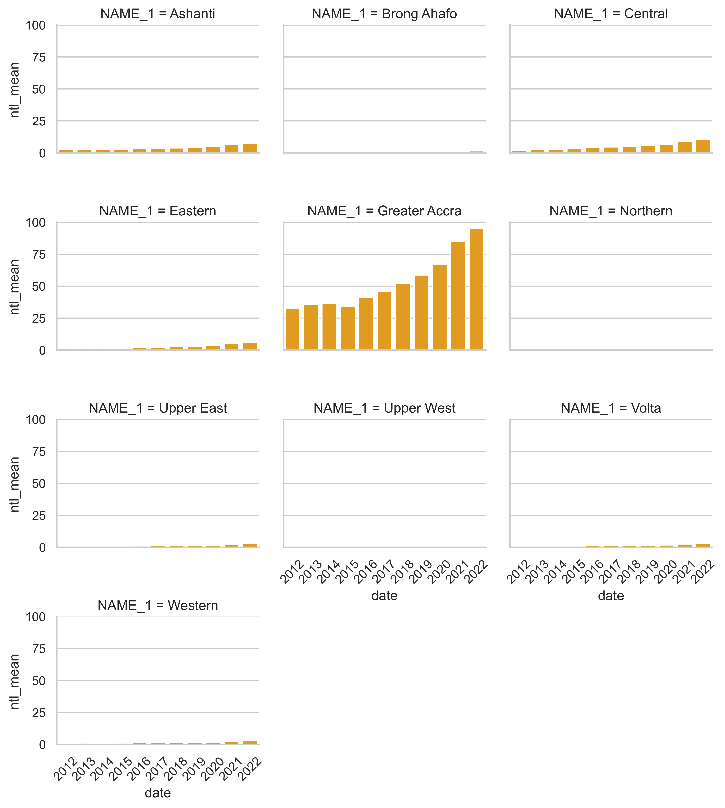

blackmarblepy#



Create Georeferenced Rasters of Nighttime Lights from NASA Black Marble data.
Overview
Installation
Bearer token
Functions and arguments
Functions
Required Arguments
Optional Arguments
Argument only for
bm_extract
Quick start
Setup
Nighttime Lights Raster
Nighttime Lights Trends
Additional Usage
Overview #
This package facilitates downloading nighttime lights Black Marble data. Black Marble data is downloaded from the NASA LAADS Archive. The package automates the process of downloading all relevant tiles from the NASA LAADS archive to cover a region of interest, converting the raw files (in H5 format) to georeferenced rasters, and mosaicing rasters together when needed.
Installation #
The package can be installed via pip.
pip install git+https://github.com/ramarty/blackmarblepy.git
from blackmarblepy.bm_raster import bm_raster
from blackmarblepy.bm_extract import bm_extract
Bearer Token #
The function requires using a Bearer Token; to obtain a token, follow the below steps:
Go to the NASA LAADS Archive
Click “Login” (bottom on top right); create an account if needed.
Click “See wget Download Command” (bottom near top, in the middle)
After clicking, you will see text that can be used to download data. The “Bearer” token will be a long string in red.
Functions and arguments #
Functions #
The package provides two functions:
bm_rasterproduces a raster of Black Marble nighttime lights.bm_extractproduces a dataframe of aggregated nighttime lights to a region of interest (e.g., average nighttime lights within US States).
Both functions take the following arguments:
Required arguments #
roi_sf: Region of interest; geopandas dataframe. Must be in the WGS 84 (epsg:4326) coordinate reference system. For
bm_extract, aggregates nighttime lights within each polygon ofroi_sf.product_id: One of the following:
"VNP46A1": Daily (raw)"VNP46A2": Daily (corrected)"VNP46A3": Monthly"VNP46A4": Annual
date: Date of raster data. Entering one date will produce a raster. Entering multiple dates will produce a raster stack.
For
product_ids"VNP46A1"and"VNP46A2", a date (eg,"2021-10-03").For
product_id"VNP46A3", a date or year-month (e.g.,"2021-10-01", where the day will be ignored, or"2021-10").For
product_id"VNP46A4", year or date (e.g.,"2021-10-01", where the month and day will be ignored, or2021).
bearer: NASA bearer token. For instructions on how to create a token, see here.
Optional arguments #
variable: Variable to used to create raster (default:
NULL). For information on all variable choices, see here; forVNP46A1, see Table 3; forVNP46A2see Table 6; forVNP46A3andVNP46A4, see Table 9. IfNULL, uses the following default variables:For
product_id"VNP46A1", usesDNB_At_Sensor_Radiance_500m.For
product_id"VNP46A2", usesGap_Filled_DNB_BRDF-Corrected_NTL.For
product_ids"VNP46A3"and"VNP46A4", usesNearNadir_Composite_Snow_Free.
quality_flag_rm: Quality flag values to use to set values to
NA. Each pixel has a quality flag value, where low quality values can be removed. Values are set toNAfor each value in therquality_flag_rmvector. (Default:[255]).For
VNP46A1andVNP46A2(daily data):0: High-quality, Persistent nighttime lights1: High-quality, Ephemeral nighttime Lights2: Poor-quality, Outlier, potential cloud contamination, or other issues255: No retrieval, Fill value (masked out on ingestion)
For
VNP46A3andVNP46A4(monthly and annual data):0: Good-quality, The number of observations used for the composite is larger than 31: Poor-quality, The number of observations used for the composite is less than or equal to 32: Gap filled NTL based on historical data255: Fill value
output_location_type: Where output should be stored (default: for
bm_raster,"tempfile"; forbm_extract,"memory"). Either:[For
bm_raster]tempfilewhere the function will export the raster as a tempfile[For
bm_extract]memorywhere the function will export the data as pandas dataframefilewhere the function will export the data as a file. Forbm_raster, a.tiffile will be saved; forbm_extract, a.csvfile will be saved. A file is saved for each date. Consequently, ifdate = [2018, 2019, 2020], three datasets will be saved: one for each year. Saving a dataset for each date can facilitate re-running the function later and only downloading data for dates where data have not been downloaded.
If output_location_type = "file", the following arguments can be used:
file_dir: The directory where data should be exported (default:
NULL, so the working directory will be used)file_prefix: Prefix to add to the file to be saved. The file will be saved as the following:
[file_prefix][product_id]_t[date].[tif/csv]file_skip_if_exists: Whether the function should first check wither the file already exists, and to skip downloading or extracting data if the data for that date if the file already exists (default:
TRUE). If the function is first run withdate = c(2018, 2019, 2020), then is later run withdate = c(2018, 2019, 2020, 2021), the function will only download/extract data for 2021. Skipping existing files can facilitate re-running the function at a later date to download only more recent data.
Argument for bm_extract only #
aggregation_fun: A vector of functions to aggregate data (default:
"mean"). Thezonal_statsfunction from therasterstatspackage is used for aggregations; this parameter is passed tostatsargument inzonal_stats.
Quickstart #
Setup #
Before downloading and extracting Black Marble data, we first load libraries, define the NASA bearer token, and define a region of interest.
## Libraries
from blackmarblepy.bm_raster import bm_raster
from blackmarblepy.bm_extract import bm_extract
import matplotlib.pyplot as plt
import numpy as np
import pandas as pd
from gadm import GADMDownloader
import seaborn as sns
## Bear token
bearer == "BEARER TOKEN HERE"
## Get Region of Interest - Ghana
downloader = GADMDownloader(version="4.0")
country_name = "Ghana"
ghana_adm1 = downloader.get_shape_data_by_country_name(country_name=country_name,
ad_level=1)
Raster of Nighttime Lights #
The below example shows making an annual raster of nighttime lights for Ghana.
## Raster of nighttime lights
r = bm_raster(roi_sf = ghana_adm1,
product_id = "VNP46A4",
date = 2022,
bearer = bearer)
## Map raster
r_np = r.read(1)
r_np = np.log(r_np+1)
plt.imshow(r_np, cmap='hot')
plt.tight_layout()
plt.axis("off")

Trends in Nighttime Lights #
The below example shows extracting average annual nighttime lights data for Ghana at the administrative 1 level and plotting the trends.
## Annual trends in nighttime lights
ntl_df = bm_extract(roi_sf = ghana_adm1,
product_id = "VNP46A4",
date = list(range(2012, 2023)),
bearer = bearer)
## Plot Trends
sns.set(style="whitegrid")
g = sns.catplot(data=ntl_df, kind="bar", x="date", y="ntl_mean", col="NAME_1", height=2.5, col_wrap = 3, aspect=1.2, color = "orange")
# Set the x-axis rotation for better visibility
g.set_xticklabels(rotation=45)
# Adjust spacing between subplots
plt.tight_layout()
# Show the plot
plt.show()

Additional Usage #
To see additional examples of using the package, see here.